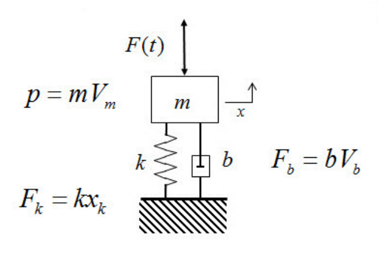
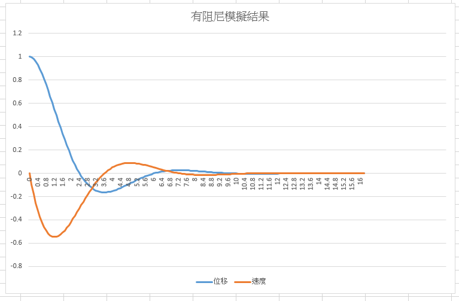
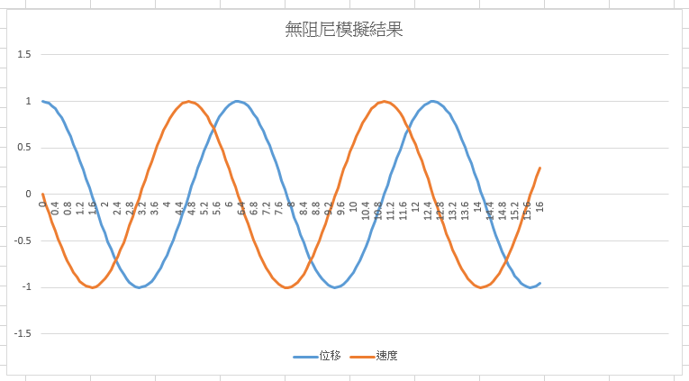

Math <<
Previous Next >> Dart Tour
Dart2 基本語法
Dart 解微分方程式

上述質量-彈簧-阻尼系統的運動方程式推導如下:
$$ \large{ m \ddot{x} + b \dot{x} + kx = F } $$
假設 $ \large {\dot{x} = v} $ 則上述二階常微分方程式可以寫為:
$$ \large{ \dot{v} = F/m - (b/m) v - (k/m)x} $$
並在已知 $x$ 與 $v$ 的起始條件下, 利用 4 階 Runge-Kutta 數值分析方法解此一微分方程式.
利用 Excel 繪出上述解微分方程式模擬結果:


上述模擬與求解的實際應用: Intro to Structural Motion Control_Chapter4.pdf
學習摘要:
Dart 程式語言的執行與傳統的 C 程式相同, 必須從 main() 主函式開始執行.
Dart 程式語法在每一個完整的可執行程式段, 使用 ";" 隔開, 並利用大括號 "{}" 來區隔程式區段.
Dart 程式具有資料型別推斷的設計, 但是當變數內容存放特定資料型別後, 便無法再自動轉為其他型別資料.
Dartpad 系統的執行分為前端與後端兩個部分, 以 https://dartpad.github.io 為例, 整體倉儲位於 https://github.com/mdecourse/dartpad, 其中的 docs 目錄被設定為 Github Pages 的資料伺服目錄, 亦即 https://mdecourse.github.io/dartpad 的前端採用 Github Pages, 因此目前只能透過 IPv4 網路協定連線.
而此一 Dartpad 系統還透過 https://github.com/mdecourse/dartpad/blob/master/lib/services/common.dart 中的設定, 利用 https://dart-services.appspot.com/ 所提供的服務作為後端.
使用者也可以自行利用 https://github.com/dart-lang/dart-services 程式碼, 自行建立 Dartpad 所需的後端伺服器, 並修改 Dartpad 前端的 https://github.com/mdecourse/dartpad/blob/master/lib/services/common.dart 設定, 指向自行設定的 Dart Server 即可在區域網路中運行 Dartpad 服務.
利用 Dartpad 引用 Dart 程式的方法, 分為 Gist 引用以及倉儲資料引用, Gist 引用以 https://dartpad.dartlang.org/?id=gistid 指定 Gist 檔案的對應 id 引用, 其中 Gist 可以直接納入 index.html, style.css 與 main.dart, 但使用上較不方便, 因為程式碼並未放入使用者的內容管理倉儲中.
第二種利用 Dartpad 引用 Dart 程式的方法, 為 Github 倉儲資料引用, 可透過 https://dartpad.dartlang.org/embed-dart.html 引入純 dart 程式, 或者透過 https://dartpad.dartlang.org/embed-html.html 引入包含 index.html 與 style.css 以及 .dart 程式的網際程式, 引用語法為:
https://dartpad.dartlang.org/embed-dart.html?gh_owner=mdecourse&gh_repo=cp2019&gh_path=downloads/dart_ex/for&theme=dark
可以引用位於 https://github.com/mdecourse/cp2019/tree/master/downloads/dart_ex/for 的程式
引用參數包含宣告 gh_owner, gh_repo, gh_path, theme, 以及 run 等.
gh_owner - 宣告 github 擁有者, 即 Github 登入帳號.
gh_repo - 宣告所使用的 github 倉儲.
gh_path - 宣告 github 資料目錄所在路徑.
theme - 宣告所要引用的頁面顏色主題, 設為 dark 表示使用暗色系頁面.
run - 設為 true 表示頁面引用後, 程式直接執行
Dart language samples, Dart language tour, Dart async-await.
Dart for Absolute Beginners
https://da-bootcamp.firebaseapp.com/?course=start_programming_dart
有關 HTML:
https://developer.mozilla.org/zh-TW/docs/Learn/Getting_started_with_the_web/HTML_basics
有關 CSS:
https://developer.mozilla.org/zh-TW/docs/Learn/Getting_started_with_the_web/CSS_basics
引用倉儲 Dart 程式範例
程式碼位於: https://github.com/mdecourse/cp2019/tree/master/downloads/dart_ex/for
包含 yaml 檔案: https://github.com/mdecourse/cp2019/blob/master/downloads/dart_ex/for/dartpad_metadata.yaml
以及所要引用的 Dart 程式: https://github.com/mdecourse/cp2019/blob/master/downloads/dart_ex/for/main.dart
若為 console 模式, 利用 main.dart 與 dartpad_metadata.yaml 透過 embed-dart.html 導入.
若為網頁模式, 利用 main.dart, index.html style.css 與 dartpad_metadata.yaml 透過 embed-html.html 導入.
main.dart 原始碼:
int i;
int sum;
main(){
sum = 0;
for(i=1;i <= 10 ;i++){
sum += i;
print("$sum");
}
print('sum = $sum');
}
dartpad_metadata.yaml 設定檔案:
# 說明此 yaml 檔案所引用程式的目的
name: Dart for loop example1
# 引用模式為純 dart 或 html 模式
mode: dart
# 所包含引入的程式名稱, 若為純 dart 則只包含 dart 程式, 若為 html 模式, 則加入 index.htm 與 style.css
files:
- name: main.dart
引用 html 語法:
<iframe width="800" height="600" src="https://dartpad.dartlang.org/embed-dart.html?gh_owner=mdecourse&gh_repo=cp2019&gh_path=downloads/dart_ex/for&theme=dark"></iframe>
利用 iframe 標註引入 For loop 程式:
其他在頁面中利用 Dartpad 引用程式碼的範例:
https://dartpad.dartlang.org/experimental/new_embeddings_demo.html
能夠利用 Dart 進行基本數學運算後, 就可以進一步套用數值分析方法, 解決簡單的工程問題. (淺談數值計算.pdf)
只要將上述 for 迴圈程式, 加上 Dart 函式的定義與呼叫方法, 就可以透過數值分析法 (Numerical Analysis) 解已知起始條件的常微分方程式:
https://github.com/mdecourse/cp2019/tree/master/downloads/dart_ex/runge_kutta
上述利用 Runge-Kutta 方法解單階常微分方程式的流程, 可以延伸至二階以上的常微分方程式, 以下利用相同方法, 以 Dart 解 Mass-Spring-Damping 模擬中的二階常微分方程式:
上述數值分析方法, 若能在網際環境中, 以 HTML5 Canvas 將解常微分方程式, 以圖示方法匯出, 將可更清楚表達該常微分方程式解所代表的物理意義, 下列為利用基本 For 迴圈與 HTML5 Canvas 的基本的幾何繪圖範例:
分組任務:
1. 數值分析運算驗證:
請根據 Ordinary differential equation examples.pdf 中的三個範例, 利用上述 Runge-Kutta 方法進行驗證運算結果.
2. 各組可否參考
Dynamic Computation of Runge-Kutta Fourth-Order Algorithm for First and Second Order Ordinary Differential Equation Using Java.pdf
與
The Dynamic Characteristic Analysis of Four-bar Linkages with Joint Clearances Based on the Computer Simulation
等兩篇論文的內容, 完成一篇標題為:
利用 Dart 程式進行具轉軸間隙的平面四連桿機構動力分析
Dynamic Analysis of Planar Four-bar Linkages with Joint Clearances using Dart Program
學術研究論文?
假如再延伸上述的動力系統分析, 將流程套用到大樓電梯軌道配重系統對抗震性能的影響分析, 其研究結果:
大樓電梯軌道配重系統的抗震性能分析
Math <<
Previous Next >> Dart Tour